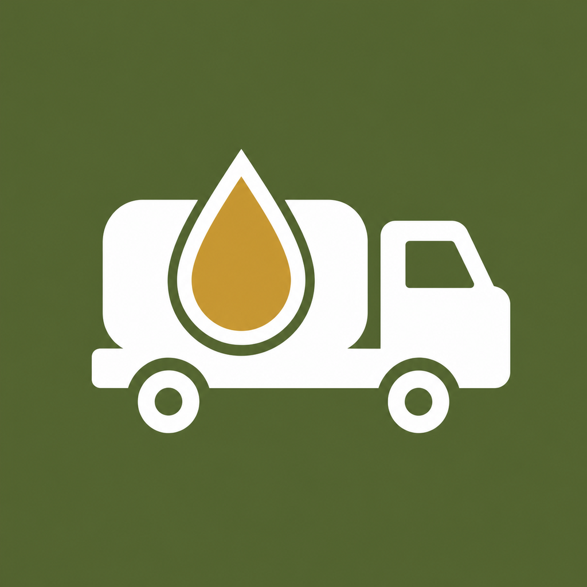

Облік пального й техніки — без паперу та зайвого клопоту
ПММ — застосунок для військовослужбовців, відповідальних за облік пально-мастильних матеріалів. Ведіть дорожні листи, закривайте їх і отримуйте готові розрахунки та офіційні документи прямо на телефоні — навіть без інтернету. За бажанням можна увімкнути онлайн-режим для спільного доступу з іншого пристрою.

Усе для щоденного обліку — і розширені інструменти, коли вони потрібні
Безкоштовно Базовий облік
Доступно всім користувачам без обмежень і без підписки.
- Картки техніки: марка, номер, підрозділ, паливо, ємність баків
- Ведення дорожніх і робочих листів, щоденні записи
- Автоматичний розрахунок витрати пального й мастил
- Закриття дорожніх листів з підписом командира підрозділу
- Нагадування про завершення терміну дії ДЛ і техогляд
Підписка Розширений доступ
Щомісячна підписка через App Store / Google Play відкриває звітність і офіційні документи.
- Донесення ПММ за обраний період
- Журнали — Д84 та журнал виходу машин з парку
- Інфографіка по закритих дорожніх листах
- Генерація офіційного Дорожнього листа у PDF (Додаток 80)
- Редагування чужих ДЛ/РЛ і техніки в онлайн-режимі за наданим доступом
Від додавання техніки до готового звіту — чотири кроки
Додайте техніку
Марка, бортовий номер, підрозділ, тип пального й нормативи витрати.
Ведіть дорожній лист
Щоденні записи про пробіг, мотогодини, отримане й витрачене ПММ.
Закрийте ДЛ
Застосунок сам порахує витрату за нормами й підсумує залишки.
Отримайте документи
Донесення, журнали й офіційний дорожній лист — готові до друку.
Опційний спільний доступ до техніки та ДЛ
Застосунок і надалі повністю працює офлайн. За бажанням можна увімкнути онлайн-режим, щоб переглядати або редагувати ту саму техніку й дорожні листи з іншого пристрою — наприклад, коли з документами працюють одразу декілька відповідальних осіб.
Як це працює
- Вмикається вручну в налаштуваннях — без email, телефону чи пароля
- Перегляд і надання доступу до своїх даних — безкоштовно для всіх
- Редагування чужих даних (лише за наданим власником дозволом) — потребує Pro-підписки
- Дані можна повністю видалити з сервера будь-коли прямо в застосунку
Детальніше — у Політиці конфіденційності, розділ «Онлайн-режим».
Базовий облік — назавжди безкоштовний
Підписка потрібна лише для звітності й офіційних документів. Оформлюється й скасовується через App Store або Google Play — застосунок не зберігає дані вашої картки і не має власного облікового запису.
Щомісячна підписка
Ціна вказана на сторінці застосунку в App Store / Google Play.
- Донесення, журнали, інфографіка, офіційний ДЛ
- Автопродовження, скасування в будь-який момент
ПК версія — той самий облік на великому екрані
Той самий застосунок, повністю офлайн за замовчуванням — тепер і для комп'ютера. Зручний перегляд і ведення техніки та дорожніх листів на великому екрані, плюс опційна спільна робота з даними кількох відповідальних осіб через власний приватний GitHub-репозиторій.
Windows ПК версія для Windows
Інсталятор одним файлом, без залежностей.
Скоро —Завантажити для Windows- Windows 10 (версія 1809, збірка 17763) або новіше, включно з Windows 11
- 64-розрядна система (x64) — 32-розрядні й ARM-версії Windows не підтримуються
- Windows 7 не підтримується
- Вільне місце на диску: від 300 МБ
- ОЗП: від 4 ГБ
macOS ПК версія для Mac
Інсталятор одним файлом, без залежностей.
Скоро —Завантажити для Mac- macOS 12 (Monterey) або новіше
- Виключно Apple Silicon (M1, M2, M3, M4 та новіші) — Mac на процесорах Intel не підтримуються
- Вільне місце на диску: від 300 МБ
- ОЗП: від 8 ГБ
Інсталятори публікуються найближчим часом. Посилання на цій сторінці оновляться автоматично, щойно вони стануть доступні для завантаження.